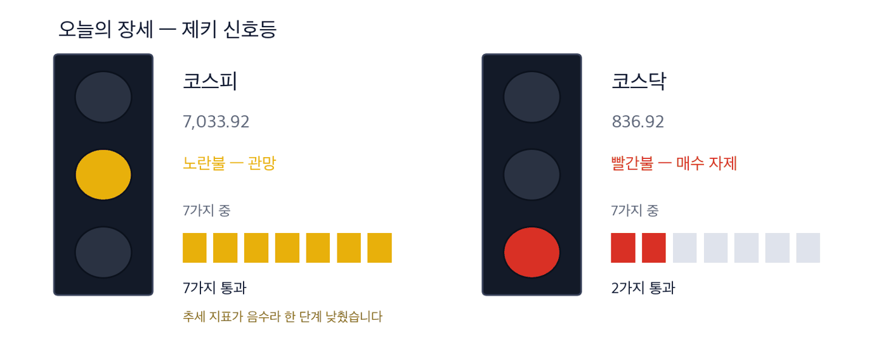
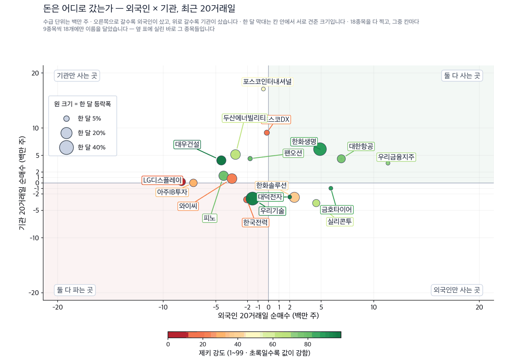
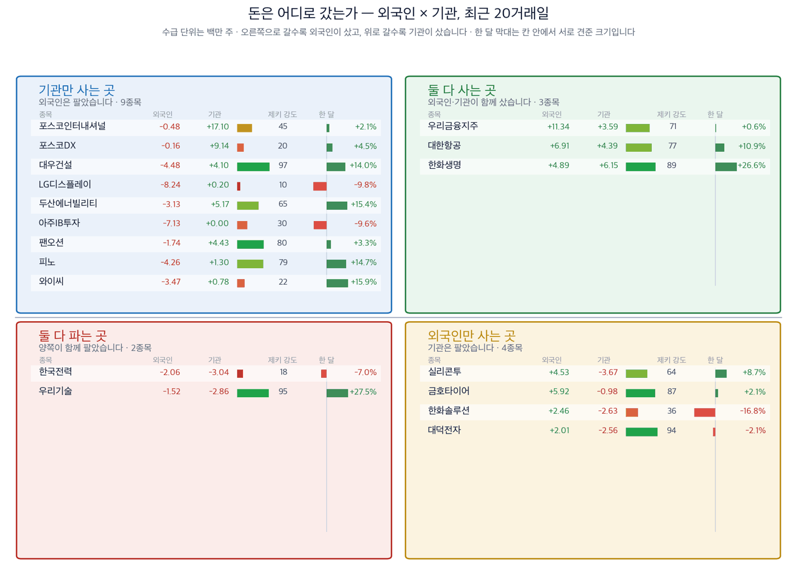

오늘 판이 늦었습니다. 만드는 작업이 중간에 멈춰 다시 지었습니다. 값은 9월 10일 종가 그대로입니다.
기름값과 금리가 같은 날 올랐습니다 — 보험이 먼저 값을 받았습니다
2026년 9월 11일 · 개장 전 · 한국 증시 · 값은 9월 10일 종가 기준입니다
코스피 7,033.92 | 코스닥 836.92 | 브렌트유 100달러+ | 미 30년물 5.35% | 석유와가스 1위 | 생명보험 2위 |
9월 10일 뉴욕에서 두 가격이 같은 날 올랐습니다. 국제유가가 6% 넘게 뛰어 브렌트유와 서부텍사스산원유가 나란히 배럴당 100달러를 넘었습니다. 미국 30년물 국채금리는 5.35%로 2007년 이후 가장 높았습니다. 재무부가 60억달러 규모 국채 매입을 내놨지만 금리는 오히려 올랐습니다. (파이낸셜타임스·연합뉴스)
같은 날 서울은 동시만기일을 맞고도 코스피가 7,000선을 지켰습니다. 7,033.92로 마쳤고 코스닥은 836.92입니다.
기름값 하나만 오르면 원가 문제이고, 금리 하나만 오르면 할인율 문제입니다. 둘이 같이 오르면 이익 추정과 그 이익에 매기는 값이 동시에 깎입니다. 오늘은 그 두 힘이 어느 업종에 이익으로 갔고 어느 업종에 부담으로 갔는지를 봅니다.
실행 요약
1. 금리가 오르면 보험이 먼저 값을 받습니다. 보험사는 받은 보험료를 채권에 넣어 두는데, 금리가 오르면 새로 사는 채권의 이자가 올라갑니다. 저희 업종 순위에서 생명보험이 2위, 손해보험이 7위로 한 칸 올라왔습니다. 한화생명은 한 달 26.6% 올랐고 현대해상은 21.0% 올랐습니다.
2. 저희 기준을 넘은 15종목 가운데 5개가 금융입니다. 616개 한국 종목을 9월 10일 종가로 걸러 나온 명단이며, 현대해상·DB손해보험·신한지주·하나금융지주·KB금융이 들어 있습니다. 기름값이 세 자릿수에 닿기 전부터 그쪽으로 기울어 있었다는 뜻입니다.
3. 항공은 기사가 그럴듯한데 셈이 반대입니다. 대한항공에는 외국인이 20거래일 동안 690만 주, 기관이 439만 주를 사들였습니다. 그런데 기름값이 오르면 항공사는 연료비가 늘어납니다. 자금과 원가가 반대 방향이라 저희는 이 테마를 종목으로 만들지 않고 지켜보는 자리에만 둡니다.
그래서 어떻게 하나: 돈이 오래 들어간 곳은 금리를 받는 자리(보험·은행)이고, 기름값은 석유와가스를 업종 1위에 올려 두었습니다. 두 힘은 방향이 달라 따로 보셔야 합니다.
제키 신호등

이 그림 읽는 법
| 켜진 등 | 오늘의 국면입니다. 초록은 매수 우위, 노랑은 관망, 빨강은 매수 자제입니다. |
| 채워진 칸 | 7가지 조건 중 몇 개를 통과했는지입니다. 칸이 많이 찰수록 시장 구조가 튼튼합니다. |
| 칸이 다 찼는데 노랑·빨강이면 | 다른 이유로 한 단계 낮춘 것입니다. 그림 아래에 그 이유를 적었습니다. |
제키 신호등은 저희가 7가지 조건으로 시장 국면을 재는 지표입니다. 초록은 매수 우위, 노랑은 관망, 빨강은 매수 자제를 뜻합니다. 코스피는 노란불, 코스닥은 빨간불입니다. 코스피는 7가지를 모두 통과했는데도 추세 지표가 아직 0 아래여서 한 단계 낮췄습니다. 코스닥은 2가지만 통과했습니다. 국면 판정은 9월 10일 종가 기준입니다.
왜 그런가
기사에서 출발해 저희 값으로 확인한 종목입니다
먼저, 이번 주 경제
| 날짜 | 무엇을 보는가 | 넘으면 어떻게 되는가 |
|---|
| 9월 11일 | 미국 10년물 국채금리 5% 선 | 넘으면 보험·은행 쪽 이야기가 하루 더 이어집니다 |
| 이번 주 | 브렌트유 100달러 선 | 이 선 위에서 마치면 석유와가스가 업종 1위를 지킵니다 |
| 이번 주 | 원/달러 환율 | 기름값이 오르면 원유를 전량 수입하는 한국은 환율 부담이 겹칩니다 |
| 다음 회의 | 유럽중앙은행 추가 인상 | 9월 10일 0.25%포인트 올렸습니다. 더 올리면 금리 이야기가 길어집니다 (연합뉴스) |
테마 1 · 금리를 받는 자리 — 보험
보험사는 받은 보험료를 채권에 넣어 둡니다. 금리가 오르면 새로 사는 채권의 이자가 올라가고, 오래 묶어 둔 부채의 현재 가치는 줄어듭니다. 둘 다 보험사에 유리한 방향입니다. 저희 업종 순위에서 생명보험은 2위, 손해보험은 7위로 한 칸 올라왔습니다.
한화생명 (088350) 근거 있음 9월 10일 기준 · 한 달 +26.6% · 제키 강도 89 · 외국인 20거래일 +488만 주 · 기관 20거래일 +614만 주 | 누가 | 한화생명, 국내 생명보험회사입니다. | | 무엇을 | 보험료를 받아 채권과 대체자산에 넣고 그 차익으로 법니다. | | 언제 | 9월 10일까지 한 달 동안 26.6% 올랐습니다. | | 어디서 | 생명보험 업종은 저희 순위에서 54개 중 2위입니다. | | 왜 | 금리가 오르면 새로 사는 채권의 이자가 올라갑니다. 보험사가 금리 상승에서 가장 곧바로 이익을 받는 자리입니다. | | 어떻게 | 외국인과 기관이 20거래일 동안 함께 사들였습니다. 저희가 재는 626종목 가운데 양쪽이 함께 산 종목은 많지 않습니다. |
확인 신호 — 미국 10년물이 5%를 넘긴 채로 이번 주를 마치면 이 이야기가 값으로 확인됩니다. 철회 기준 — 금리가 되돌아 내려가거나 외국인·기관 중 한쪽이 20거래일 순매도로 돌아서면 고른 근거가 사라집니다. |
현대해상 (001450) 근거 확실 9월 10일 종가 50,400원 · 그날 +2.86% · 한 달 +21.0% · 석 달 +28.4% · 제키 강도 92 · 52주 고점 대비 −5.8% | 누가 | 현대해상, 국내 손해보험회사입니다. | | 무엇을 | 자동차·일반 보험을 팔고 받은 보험료를 채권에 운용합니다. | | 언제 | 9월 10일 하루에 2.86% 올랐고 한 달로는 21.0% 올랐습니다. | | 어디서 | 손해보험 업종은 저희 순위에서 7위이며 하루 전보다 한 칸 올랐습니다. | | 왜 | 손해보험은 계약 기간이 짧아 금리가 오르면 재투자 이익이 더 빨리 따라옵니다. | | 어떻게 | 저희 기준을 넘은 15종목 안에 있고 제키 강도 92로 명단 상위입니다. 값이 이미 따라온 자리라 새로 들어가는 값은 비쌉니다. |
확인 신호 — 9월 10일 종가 50,400원 위에서 이번 주를 마치면 금리 이야기가 이어진 것입니다. 철회 기준 — 손해보험 업종이 12위 밖으로 밀리면 이 자리를 고른 근거가 사라집니다. |
테마 2 · 기름값을 파는 자리 — 석유와가스
국제유가가 6% 넘게 올라 배럴당 100달러를 넘었습니다. 원유를 캐거나 정제해 파는 회사는 파는 값이 그대로 오릅니다. 저희 업종 순위에서 석유와가스는 제키 강도 91.0으로 54개 업종 중 1위이고, 하루 전과 같은 자리를 지켰습니다. 기름값이 세 자릿수에 닿기 전부터 이미 맨 위에 있었다는 뜻입니다.
다만 한국에서 이 테마는 미국과 다릅니다. 한국은 원유를 거의 전량 수입합니다. 정유회사는 정제마진으로 벌지만, 나머지 대부분의 업종에는 원가 부담으로 돌아옵니다. 그래서 저희는 이 테마를 업종 순위로만 싣고 개별 종목으로는 만들지 않습니다 — 같은 유가 상승이 두 시장에서 같은 무게로 작동하지 않기 때문입니다.
채택하지 않은 테마 · 기름값과 항공
대한항공 (003490) 테마 제외 한 달 +10.9% · 제키 강도 77 · 외국인 20거래일 +691만 주 · 기관 20거래일 +439만 주 | 누가 | 대한항공, 국적 항공사입니다. | | 무엇을 | 여객과 화물을 실어 나릅니다. | | 언제 | 9월 10일까지 한 달 동안 10.9% 올랐습니다. | | 어디서 | 외국인 20거래일 순매수 상위에 들어 있습니다. | | 왜 | 기름값이 오르면 항공사는 연료비가 늘어납니다. 자금은 들어왔는데 원가는 반대 방향입니다. | | 어떻게 | 제키 강도 77로 저희 기준선 80에 못 미칩니다. 이야기가 그럴듯해도 값과 기준이 따라오지 않으면 종목으로 만들지 않습니다. |
|
자금이 들어왔다는 사실만으로 종목을 만들지 않습니다. 저희는 기준을 넘었는가를 먼저 보고, 그다음에 자금을 봅니다. 순서를 바꾸면 이야기가 값을 끌고 가게 됩니다.
근거의 무게 — 종목마다 넉 줄로 확인합니다
카드에 붙은 딱지는 저희 결론입니다. 이 표는 그 결론이 어떻게 나왔는지입니다. 읽는 분이 직접 검산하실 수 있습니다.
| 종목 | ①값이
올랐나 | ②강도
90↑ | ③외국인
순매수 | ④기관
순매수 | 충족 | 근거의 무게 |
|---|
| 현대해상 (001450) | O | O | X | O | 3/4 | 근거 있음 |
| 한화생명 (088350) | O | X | O | O | 3/4 | 근거 있음 |
| 금호타이어 (073240) | O | X | O | X | 2/4 | 확인 필요 |
| 대한항공 (003490) | O | X | O | O | 3/4 | 근거 있음 |
| 우리금융지주 (316140) | O | X | O | O | 3/4 | 근거 있음 |
한 줄을 왼쪽에서 오른쪽으로 읽으십시오. ①한 달 동안 값이 올랐는가 ②제키 강도가 90 이상인가 ③외국인이 20거래일 순매수했는가 ④기관이 20거래일 순매수했는가. O가 넷이면 근거 확실이고 둘 이하면 확인 필요입니다. 딱지는 저희 의견이 아니라 O의 개수가 정합니다 — 그래서 표와 딱지가 어긋날 수 없습니다.
3/4인데도 테마에서 뺀 종목이 둘 있습니다. O/X가 재지 못하는 것이 하나 있기 때문입니다. 대한항공은 원가가 반대 방향입니다. 우리금융지주는 외국인이 20거래일 동안 1,134만 주를 사들였습니다. 그런데 한 달 성적은 0.6%에 그쳤습니다. 자금이 왔는데 값이 오지 않은 자리입니다. 표는 거기까지 말해 주지 못해 저희가 문장으로 적습니다.
오늘 찾은 것, 한 장으로
| 테마 | 종목 | 한 달 | 제키 강도 | 근거의 무게 |
|---|
| 금리·보험 | 현대해상 (001450) | +21.0% | 92 | 근거 확실 |
| 금리·보험 | 한화생명 (088350) | +26.6% | 89 | 근거 있음 |
| 기름값 | 석유와가스 업종 1위 | 업종 RS 91 | - | 확인 필요 |
| 기름값·항공 | 대한항공 (003490) | +10.9% | 77 | 테마 제외 |
| 금리·은행 | 우리금융지주 (316140) | +0.6% | 71 | 테마 제외 |
찾아낸 종목에 자금이 따라왔는가
돈이 어디로 갔는지 한눈에: 매집 보험 · 정유 분산 화학 · 전력
| 종목 | 외국인 20거래일 | 기관 20거래일 | 읽는 법 |
|---|
| 한화생명 | +489만 주 | +614만 주 | 양쪽이 함께 사들였습니다 |
| 대한항공 | +691만 주 | +439만 주 | 양쪽이 샀지만 원가가 반대입니다 |
| 우리금융지주 | +1,134만 주 | +359만 주 | 자금은 왔는데 값이 오지 않았습니다 |
| 금호타이어 | +592만 주 | −98만 주 | 외국인만 샀습니다 |
| 한국전력 | −206만 주 | −304만 주 | 양쪽이 함께 팔았습니다 |
왼쪽 두 칸은 20거래일 순매수 누계이며 기준일은 9월 9일입니다. 두 칸의 부호가 어긋나는 종목이 방향을 바꾸는 중인 종목입니다.
외국인과 기관은 어디로 갔나
기사와 값이 맞아떨어져도 자금은 따로 봅니다. 아래는 20거래일 순매수·순매도 상위이며 기준일은 9월 9일입니다. 626종목을 같은 방법으로 재서 넷으로 갈랐습니다.
| 외국인이 산 곳 | 20거래일 | 기관이 산 곳 | 20거래일 |
|---|
| 우리금융지주 | +1,134만 주 | 포스코인터내셔널 | +1,710만 주 |
| 대한항공 | +691만 주 | 포스코DX | +914만 주 |
| 금호타이어 | +592만 주 | 한화생명 | +614만 주 |
| 한화생명 | +489만 주 | 두산에너빌리티 | +517만 주 |
| 실리콘투 | +453만 주 | 팬오션 | +443만 주 |
한화생명이 양쪽 표에 모두 있습니다. 외국인과 기관이 같은 종목을 함께 사들인 자리이며, 오늘 저희가 이 종목을 고른 가장 큰 이유입니다.

이 그림 읽는 법
| 점 하나 | 종목 하나입니다. 가로·세로 위치가 두 값을 그대로 나타내고, 가운데 가로·세로로 그어진 두 선이 기준선입니다. 네 귀퉁이의 이름표가 그 칸의 뜻입니다. |
| 점 크기 | 최근 한 달 등락폭입니다. 오르든 내리든 크게 움직였으면 큰 점입니다. |
| 점 색 | 제키 강도입니다. 초록일수록 주가가 시장에서 강합니다. |
| 30종목만 | 이름이 겹치면 못 읽기 때문입니다. 가운데 몰린 나머지는 움직임이 거의 없는 종목들이라 뺐습니다. |

이 그림 읽는 법
| 네 칸 | 가로와 세로 두 값이 각각 기준선을 넘었는지로 넷을 가릅니다. 오른쪽 위는 둘 다 넘은 곳, 왼쪽 아래는 둘 다 못 넘은 곳, 나머지 두 칸은 한쪽만 넘은 곳입니다. 칸 이름이 그 칸에 든 종목의 상태를 한 문장으로 적어 둔 것입니다. |
| 가운데 두 칸 | 두 기간을 견주는 자리입니다. 글자 A~E가 있으면 이 업계가 쓰는 표준 등급으로, A는 강한 매수, B는 매수 우세, C는 매수와 매도가 반반, D는 매도 우세, E는 강한 매도를 뜻합니다(전체를 다섯으로 나눈 순위라 A가 상위 20%입니다). 숫자가 있으면 그 기간의 순매수 규모입니다. |
| 칸마다 9종목 | 그 칸에서 움직임이 가장 큰 순서입니다. 나머지는 칸 아래에 몇 종목인지만 적었습니다. 옆 산점도가 이름을 다는 종목이 바로 이 9종목씩입니다. |
| 한 달 막대 | 0을 가운데 두고 오른쪽이 상승, 왼쪽이 하락입니다. 길이는 같은 칸 안에서만 서로 견주십시오 — 칸마다 기준이 다릅니다. |
| 제키 강도 | 1~99 순위입니다. 막대가 길수록, 초록에 가까울수록 그 종목의 주가가 시장에서 강합니다. |
장중 체크리스트
| 언제 | 무엇을 확인할 것인가 |
|---|
| 개장 30분 | 보험 두 종목이 전날 값을 지킨 채 여는지 봅니다. 갭으로 열었다가 곧바로 되돌리면 하루짜리 반응입니다. |
| 장중 | 원/달러 환율이 더 오르는지 봅니다. 기름값과 환율이 같이 오르면 수입 원가가 두 번 부담이 됩니다. |
| 마감 30분 | 석유와가스 업종이 1위를 지켰는지 봅니다. 밀리면 오늘 읽기의 절반이 힘을 잃습니다. |
오늘 종목을 어떻게 읽으실지
이 다이제스트는 저희가 계산한 숫자로 걸러낸 종목을 싣습니다. 사고파는 값을 정해 드리지 않습니다. 대신 무엇이 나오면 이야기가 맞고 무엇이 나오면 틀리는지를 종목마다 함께 실었습니다.
제키 강도는 저희가 보는 한국 상장 종목 전체에서 그 종목의 값이 몇 등인지를 1부터 99까지로 매긴 것입니다. 92는 상위 8% 안에 든다는 뜻입니다. 제키 신호등은 7가지 조건으로 시장 국면을 재는 지표입니다. 외국인·기관 순매수는 거래소가 공시하는 값이며 저희가 계산한 것이 아닙니다.
오늘 본 것 — 연합뉴스와 파이낸셜타임스를 비롯한 통신사 보도입니다. 한국경제·매일경제·월스트리트저널·IBD 의 지면은 오늘 열지 못해 지면 분석을 싣지 않았습니다. 기사에서 가져온 것은 사실뿐이고 문장은 모두 저희가 다시 썼습니다.
값의 출처 — 지수와 종목 값은 9월 10일 종가입니다. 외국인·기관 순매수는 9월 9일 기준 20거래일 누계입니다. 제키 강도와 업종 순위는 9월 10일 종가로 계산했습니다.
이 다이제스트는 저희가 계산한 값으로 걸러낸 종목을 싣습니다. 개별 투자 자문이 아니며 특정 종목의 매수나 매도를 권하지 않습니다. 실린 등급과 순위는 모두 저희가 계산한 것이고, 모의 포트폴리오 기준입니다. 투자에는 원금 손실 위험이 따릅니다.
본 리포트는 정보 제공 목적이며 개별 투자 자문이 아닙니다. ZekiRex™ Apex KR는 10억 원 규모의 모의 포트폴리오를 규칙 기반으로 운용합니다 — 실제 계좌도, 주문도, 체결도 없습니다. 표시된 성과에는 수수료와 세금, 매매 시 가격 미끄러짐이 반영되지 않았습니다. 종목 자료에는 상장폐지된 회사가 빠져 있습니다. 그래서 성과가 실제보다 높게 나오는 치우침(생존편향)이 있습니다. 과거의 성과는 미래를 보장하지 않으며, 투자에는 원금 손실 위험이 따릅니다.
This is the Rex Way, ZekiRex™